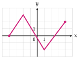

📝 Repaso de la unidad
Actividades de repaso
Escribe tu respuesta y después pulsa «Ver la solución» para corregirla tú. Los puntos dicen el nivel: ● básico, ●●● ampliación.
- Calcula los valores de \(f(x)=x^2-2x+1\) para \(x=-1,0,1,2\) y representa la función.
- Completa la tabla y dibuja los puntos para \(g(x)=\left(\dfrac{x}{2}\right)^2-2\) con \(x=-4,-2,0,2,4\).
- Para \(h(x)=\dfrac{1}{x}\), representa la rama para \(x>0\) y \(x<0\) en un sistema de coordenadas.
Solución
- \(f(-1)=4,\;f(0)=1,\;f(1)=0,\;f(2)=1\).
- \(g(-4)=2,\;g(-2)=-1,\;g(0)=-2,\;g(2)=-1,\;g(4)=2\).
- Representación: hipérbola con ramas en cuadrantes I y III, asíntotas en \(x=0,y=0\).
¿Cómo te ha ido?
- Calcula los valores de \(f(x)=-x^2+4x\) para \(x=0,1,2,3,4\) y describe la forma de la gráfica.
- Completa la tabla para la función valor absoluto \(g(x)=|x-2|\) con \(x=0,1,2,3,4\).
- Representa la función radical \(h(x)=\sqrt{x}\) e indica a partir de qué valor de \(x\) empieza la gráfica.
Solución
- \(f(0)=0,\;f(1)=3,\;f(2)=4,\;f(3)=3,\;f(4)=0\).
- \(g(0)=2,\;g(1)=1,\;g(2)=0,\;g(3)=1,\;g(4)=2\).
- Comienza en \((0,0)\), existe para \(x \ge 0\).
¿Cómo te ha ido?
Completa la tabla de valores de \(f(x)=2x-3\) para \(x=-2,-1,0,1,2\) y representa los puntos. ¿Qué forma tiene la gráfica?
Solución
\(f(-2)=-7,\;f(-1)=-5,\;f(0)=-3,\;f(1)=-1,\;f(2)=1\). Los puntos están alineados: es una recta.
¿Cómo te ha ido?
Indica cuáles de estas relaciones son funciones y explica por qué.
- A cada alumno de tu clase le asociamos su fecha de nacimiento.
- A cada número positivo le asociamos sus raíces cuadradas.
- A cada número real le asociamos su cuadrado.
- La relación dada por la tabla \(x\): \(1, 2, 2, 3\); \(y\): \(4, 5, 6, 7\).
Solución
- Sí: cada alumno tiene una única fecha de nacimiento.
- No: cada número positivo tiene dos raíces cuadradas (por ejemplo, \(\pm 2\) para el 4).
- Sí: cada número tiene un único cuadrado.
- No: a \(x=2\) le corresponden dos valores, \(5\) y \(6\).
¿Cómo te ha ido?
Comprueba, sin dibujarla, cuáles de los puntos \(A(2,-2)\), \(B(-1,4)\), \(C(3,1)\) y \(D(0,0)\) pertenecen a la gráfica de \(f(x)=x^2-3x\).
Solución
\(f(2)=-2\), \(f(-1)=4\), \(f(3)=0\) y \(f(0)=0\). Pertenecen \(A\), \(B\) y \(D\); \(C\) no.
¿Cómo te ha ido?
Escribe la expresión algebraica de la función que corresponde a cada tabla.
- \(x\): \(0, 1, 2, 3, 4\); \(y\): \(1, 4, 7, 10, 13\).
- \(x\): \(-2, -1, 0, 1, 2\); \(y\): \(4, 1, 0, 1, 4\).
Solución
- \(y=3x+1\).
- \(y=x^2\).
¿Cómo te ha ido?
Un rectángulo tiene \(20\) cm de perímetro. Si llamamos \(x\) a la base, su área es \(A(x)=x(10-x)\). Haz una tabla de valores para \(x=0, 2, 4, 5, 6, 8, 10\), represéntala e indica qué valores de \(x\) tienen sentido en el problema.
Solución
\(A\): \(0, 16, 24, 25, 24, 16, 0\). Tienen sentido los valores \(0<x<10\). El área es máxima, \(25\) cm\(^2\), para \(x=5\) (un cuadrado).
¿Cómo te ha ido?
Las temperaturas de un día de primavera fueron:
| Hora | 0 | 3 | 6 | 9 | 12 | 15 | 18 | 21 | 24 |
| Temperatura (ºC) | 5 | 3 | 2 | 6 | 11 | 14 | 12 | 8 | 6 |
Uniendo los puntos, indica el máximo, el mínimo y los intervalos de crecimiento y de decrecimiento.
Solución
Máximo: \(14\) ºC a las 15 h. Mínimo: \(2\) ºC a las 6 h. Crece en \((6,15)\); decrece en \((0,6)\) y en \((15,24)\).
¿Cómo te ha ido?
- Analiza continuidad, periodicidad y tramos de crecimiento/decrecimiento de \(f(x)=x^2-2\).
- Determina dominio y recorrido de \(g(x)=\sin x\) y di si es periódica.
- Para \(h(x)=\dfrac{1}{2x-1}+0{,}5\) indica asíntotas y puntos de discontinuidad.
Solución
- Continua en todo \(\mathbb{R}\), no periódica, creciente para \(x>0\), decreciente para \(x<0\).
- \(Dom(g)=\mathbb{R}\), \(Rec(g)=[-1,1]\), es periódica con periodo \(2\pi\).
- Discontinua en \(x=\tfrac12\) (asíntota vertical \(x=\tfrac12\)); asíntota horizontal \(y=0{,}5\).
¿Cómo te ha ido?
- Analiza el dominio y recorrido de \(f(x)=\sqrt{x-3}\).
- Determina los puntos de corte con los ejes de la función \(g(x)=x^2-9\).
- Estudia visualmente o analíticamente la simetría de las funciones \(h(x)=x^2\) y \(j(x)=x^3\).
Solución
- \(Dom(f)=[3,+\infty)\); \(Rec(f)=[0,+\infty)\).
- Corte en \(Y\): \((0,-9)\); Cortes en \(X\): \((3,0)\) y \((-3,0)\).
- \(h(x)\) es par; \(j(x)\) es impar.
¿Cómo te ha ido?
Halla los puntos de corte con los ejes de estas funciones:
- \(f(x)=2x-6\)
- \(g(x)=x^2-5x+6\)
- \(h(x)=x^2+1\)
Solución
- Eje \(Y\): \((0,-6)\); eje \(X\): \((3,0)\).
- Eje \(Y\): \((0,6)\); eje \(X\): \((2,0)\) y \((3,0)\).
- Eje \(Y\): \((0,1)\); no corta al eje \(X\), porque \(x^2+1>0\) siempre.
¿Cómo te ha ido?
Calcula \(f(-x)\) e indica si cada función es par, impar o ninguna de las dos.
- \(f(x)=x^4-2x^2\)
- \(g(x)=x^3-x\)
- \(h(x)=x^2+x\)
- \(k(x)=\dfrac{5}{x}\)
Solución
- \(f(-x)=f(x)\): par (simétrica respecto al eje \(Y\)).
- \(g(-x)=-g(x)\): impar (simétrica respecto al origen).
- \(h(-x)=x^2-x\): ni par ni impar.
- \(k(-x)=-k(x)\): impar.
¿Cómo te ha ido?
Observa la gráfica de la función e indica su dominio, su recorrido, los intervalos de crecimiento y decrecimiento, y sus máximos y mínimos.

Solución
\(Dom[f(x)]=[-4,4]\); \(Rec[f(x)]=[-2,3]\). Crece en \((-4,-2)\) y en \((1,4)\); decrece en \((-2,1)\). Máximo en \((-2,3)\); mínimo en \((1,-2)\).
¿Cómo te ha ido?
Indica si estas funciones son continuas. Si no lo son, di en qué punto se rompe la gráfica.
- \(f(x)=\dfrac{1}{x+2}\)
- \(g(x)=x^2-3x\)
- \(h(x)=\begin{cases} x+1 & \text{si } x<1 \\ 3 & \text{si } x\geq 1 \end{cases}\)
Solución
- No es continua en \(x=-2\), donde no existe (asíntota vertical).
- Continua en todo \(\mathbb{R}\) (es polinómica).
- No es continua en \(x=1\): a la izquierda se acerca a \(2\) y en \(x=1\) vale \(3\) (salto).
¿Cómo te ha ido?
Una función periódica de periodo \(3\) cumple que \(f(0)=1\), \(f(1)=4\) y \(f(2)=-2\). Calcula \(f(3)\), \(f(7)\), \(f(11)\) y \(f(-1)\).
Solución
\(f(3)=f(0)=1\); \(f(7)=f(1)=4\); \(f(11)=f(2)=-2\); \(f(-1)=f(2)=-2\).
¿Cómo te ha ido?
Para la función \(f(x)=\dfrac{3}{x-1}+2\), indica su dominio, su recorrido y sus asíntotas. Calcula \(f(2)\) y \(f(4)\).
Solución
\(Dom[f(x)]=\mathbb{R}\setminus\{1\}\); \(Rec[f(x)]=\mathbb{R}\setminus\{2\}\). Asíntota vertical \(x=1\) y horizontal \(y=2\). \(f(2)=5\); \(f(4)=3\).
¿Cómo te ha ido?
Calcula la \(TVM[0,2]\) y la \(TVM[3,7]\) de \(f(x)=5x-2\). ¿Por qué obtienes el mismo resultado?
Solución
Las dos valen \(5\). En una función lineal la TVM es constante e igual a la pendiente.
¿Cómo te ha ido?
- Calcula \(TVM[1,3]\) para \(f(x)=x^2\).
- Calcula \(TVM[0,4]\) para \(f(x)=2x+1\).
- Interpreta el significado geométrico de la TVM en cada caso.
Solución
- \(TVM[1,3]=4\).
- \(TVM[0,4]=2\).
- Pendiente de la recta secante.
¿Cómo te ha ido?
- Calcula la \(TVM[-1,2]\) para \(f(x)=3x^2-1\).
- Halla la \(TVM[1,4]\) para la función inversa \(g(x)=\dfrac{1}{x}\).
- ¿Qué indica geométricamente que la \(TVM\) sea un valor negativo?
Solución
- \(TVM = 3\).
- \(TVM = -0{,}25\).
- La función decrece en el intervalo.
¿Cómo te ha ido?
Las visitas a la web de un albergue (en miles) han sido:
| Año | 2019 | 2020 | 2021 | 2022 | 2023 |
| Visitas (miles) | 40 | 12 | 25 | 38 | 46 |
Calcula la TVM entre 2019 y 2020 y entre 2020 y 2023, e interpreta los resultados.
Solución
\(TVM[2019,2020]=-28\): bajaron \(28\,000\) visitas en un año. \(TVM[2020,2023]=\frac{34}{3}\approx 11{,}33\): subieron de media unas \(11\,330\) visitas al año.
¿Cómo te ha ido?
Para \(f(x)=x^2-4x\) calcula \(TVM[0,2]\), \(TVM[2,4]\) y \(TVM[0,4]\). ¿Qué te dice cada resultado sobre la función?
Solución
\(TVM[0,2]=-2\) (decrece); \(TVM[2,4]=2\) (crece); \(TVM[0,4]=0\) (\(f(0)=f(4)=0\): toma el mismo valor en los extremos).
¿Cómo te ha ido?
Calcula la TVM de \(f(x)=2^x\) en los intervalos \([0,1]\), \([1,2]\) y \([2,3]\). ¿Qué observas?
Solución
\(1\), \(2\) y \(4\). La TVM se duplica en cada intervalo: la función crece cada vez más deprisa.
¿Cómo te ha ido?
La distancia en kilómetros que recorre un tren bala respecto al tiempo en horas viene modelada por la función \(d(t) = 50t^2\). Calcula la Tasa de variación media (TVM) entre la hora \(1\) y la hora \(3\). ¿Qué magnitud física representa este resultado?
Solución
\(TVM = 200\) km/h.
¿Cómo te ha ido?
Halla el valor de \(a>1\) para el que la \(TVM[1,a]\) de \(f(x)=x^2\) es igual a \(5\).
Solución
\(\dfrac{a^2-1}{a-1}=a+1=5\), así que \(a=4\).
¿Cómo te ha ido?
- Identifica pendiente y corte en \(y\) para: \(f(x)=3x-2\), \(g(x)=5\), \(h(x)=\tfrac{x}{3}\).
- Halla la ecuación de la recta que pasa por \((1,2)\) y \((4,8)\).
Solución
- \(f:\;m=3,n=-2\). \(g:\;m=0,n=5\). \(h:\;m=\tfrac{1}{3},n=0\).
- \(y=2x\).
¿Cómo te ha ido?
- Halla la ecuación de una recta que sea paralela a \(y=4x-1\) y que pase por el punto \((0,5)\).
- Encuentra la pendiente y la ordenada en el origen de la recta dada por la ecuación general \(2x+3y-6=0\).
Solución
- \(y=4x+5\).
- \(m=-\dfrac{2}{3}\); \(n=2\).
¿Cómo te ha ido?
En una escuela de surf en Somo, alquilar una tabla y traje de neopreno cuesta 12 € de tarifa fija por el seguro más 5 € por cada hora de uso. Expresa la función que relaciona el coste con las horas de uso y calcula cuánto costará alquilar el equipo durante 4 horas.
Solución
\(C(x) = 12 + 5x\); \(C(4) = 32\) €.
¿Cómo te ha ido?
Un taxi en Santander cobra 1,50 € por la bajada de bandera y 1,10 € por cada kilómetro recorrido. Escribe la función del precio del trayecto y averigua cuántos kilómetros has recorrido si la carrera al Aeropuerto Seve Ballesteros te ha costado 10,30 €.
Solución
\(P(x) = 1,50 + 1,10x\); \(x = 8\) km.
¿Cómo te ha ido?
Un servicio de taxi cobra \(3\)€ solo por la bajada de bandera (subirse al taxi) y, además, \(1,20\)€ por cada kilómetro recorrido. Escribe la función \(C(x)\) que calcula el coste de un viaje de \(x\) kilómetros. ¿Cuánto costará un viaje de \(10\text{ km}\)?
Solución
\(C(x) = 1,20x + 3\); \(C(10) = 15\)€.
¿Cómo te ha ido?
Un coche nuevo cuesta \(20.000\)€. Cada año que pasa, su valor de mercado disminuye en \(2.000\)€. Escribe la función \(V(t)\) que representa el valor del coche tras \(t\) años. ¿Cuánto valdrá el coche al cabo de \(6\) años?
Solución
\(V(t) = 20000 - 2000t\); \(V(6) = 8.000\)€.
¿Cómo te ha ido?
Halla la ecuación de la recta que pasa por \((-2,7)\) y tiene pendiente \(-3\). Calcula sus puntos de corte con los ejes.
Solución
\(y=-3x+1\). Eje \(Y\): \((0,1)\); eje \(X\): \(\left(\frac{1}{3},0\right)\).
¿Cómo te ha ido?
Comprueba si los puntos \(A(1,3)\), \(B(3,7)\) y \(C(-2,-3)\) están alineados. Si lo están, halla la recta que los contiene.
Solución
Las pendientes de \(AB\) y de \(AC\) valen \(2\): están alineados. Recta: \(y=2x+1\).
¿Cómo te ha ido?
Necesitamos un fontanero. La Empresa A cobra \(50\)€ por desplazamiento más \(10\)€/hora trabajada (\(y=10x+50\)). La Empresa B no cobra desplazamiento, pero la hora cuesta \(20\)€ (\(y=20x\)). ¿A partir de cuántas horas de trabajo nos sale más barata la Empresa A?
Solución
Con 5 horas cuestan lo mismo (100 €); a partir de ahí, con más de 5 horas, es más barata la Empresa A.
¿Cómo te ha ido?
Sin representarlas, indica si las ramas de cada parábola van hacia arriba o hacia abajo y en qué punto corta al eje \(Y\).
- \(f(x)=2x^2-3x+1\)
- \(g(x)=-x^2+5\)
- \(h(x)=-3x^2+x\)
Solución
- Hacia arriba (\(a=2>0\)); \((0,1)\).
- Hacia abajo (\(a=-1<0\)); \((0,5)\).
- Hacia abajo (\(a=-3<0\)); \((0,0)\).
¿Cómo te ha ido?
- Para \(f(x)=x^2-4x+3\) calcula el vértice, el eje de simetría y el valor mínimo.
- Resuelve \(x^2-4x+3=0\) y comprueba la relación con la gráfica.
Solución
- V\((2,-1)\); Eje: \(x=2\); Mínimo: \(-1\).
- Raíces: \(x=1, x=3\).
¿Cómo te ha ido?
- Para \(f(x)=-x^2+6x-5\), calcula el vértice y los puntos de corte con los ejes.
- Justifica matemáticamente si el vértice hallado en el apartado anterior es un máximo o un mínimo.
Solución
- V\((3,4)\); Cortes en \(X\): \(x=1, x=5\); Corte en \(Y\): \((0,-5)\).
- Máximo absoluto (\(a=-1<0\)).
¿Cómo te ha ido?
Una conservera de Santoña ha estudiado que su beneficio diario (en cientos de euros) en la venta de anchoas depende del precio del tarro \(x\) (en euros) según la función \(B(x) = -2x^2 + 24x - 52\). ¿A qué precio deben vender el tarro para obtener el beneficio máximo? ¿Cuál será ese beneficio?
Solución
Precio: \(6\) €; Beneficio máximo: \(2000\) €.
¿Cómo te ha ido?
Durante una exhibición de salto pasiego, un mozo salta con su palo alcanzando una altura en metros dada por \(h(t) = -5t^2 + 6t + 0,5\), siendo \(t\) el tiempo en segundos. ¿A qué altura máxima llega y en qué instante?
Solución
\(t = 0,6\) s; Altura máxima: \(2,3\) m.
¿Cómo te ha ido?
Para hallar el vértice de \(y=x^2-6x+5\), Elena calcula \(x=-\frac{b}{2a}=-\frac{6}{2}=-3\). Explica el error y halla el vértice correcto.
Solución
\(b=-6\), así que \(x=-\frac{-6}{2}=3\). Vértice: \((3,-4)\).
¿Cómo te ha ido?
Para \(f(x)=x^2+2x-8\) calcula el vértice, el eje de simetría, los puntos de corte con los ejes y el recorrido. Represéntala.
Solución
V\((-1,-9)\); eje: \(x=-1\); eje \(X\): \((-4,0)\) y \((2,0)\); eje \(Y\): \((0,-8)\); \(Rec[f(x)]=[-9,+\infty)\).
¿Cómo te ha ido?
Se lanza una pelota de tenis hacia arriba. Su altura en metros tras \(t\) segundos viene dada por la función \(h(t) = -5t^2 + 20t + 1\). ¿Cuál es la altura máxima que alcanza la pelota y en qué segundo ocurre?
Solución
Altura máxima: \(h = 21\) metros en \(t = 2\) segundos.
¿Cómo te ha ido?
Un granjero tiene 40 metros de valla para cercar un corral rectangular. Un lado del corral estará contra un muro de piedra ya existente (no necesita valla). Si llamamos \(x\) al ancho del corral, la función del área es \(A(x) = x(40 - 2x)\). ¿Qué dimensiones dan el área máxima?
Solución
Ancho: \(x = 10\) m; Largo: \(20\) m; Área máxima: \(200\) m\(^2\).
¿Cómo te ha ido?
El perfil del arco de un puente sobre el río Asón se puede modelizar aproximadamente mediante la parábola \(y = -0,05x^2 + 1,5x\), donde \(x\) e \(y\) están en metros. ¿Qué anchura tiene el puente en su base (nivel del agua, \(y=0\))?
Solución
Anchura = 30 metros.
¿Cómo te ha ido?
Halla el valor de \(c\) para que el vértice de la parábola \(y=x^2-6x+c\) esté sobre el eje \(X\). ¿Cuántos puntos de corte con el eje \(X\) tiene entonces?
Solución
\(V_x=3\) y \(9-18+c=0\), así que \(c=9\). Solo corta al eje \(X\) en el vértice, \((3,0)\).
¿Cómo te ha ido?
Haz una tabla de valores de \(f(x)=3^x\) y de \(g(x)=\left(\frac{1}{3}\right)^x\) para \(x=-2,-1,0,1,2\). ¿Cuál es creciente y cuál decreciente? ¿Qué punto tienen en común?
Solución
\(f\): \(\frac{1}{9}, \frac{1}{3}, 1, 3, 9\) (creciente). \(g\): \(9, 3, 1, \frac{1}{3}, \frac{1}{9}\) (decreciente). Las dos pasan por \((0,1)\).
¿Cómo te ha ido?
- Calcula \(f(0),f(1),f(2)\) para \(f(x)=2^x\) y comenta su comportamiento cuando \(x\to\infty\) y \(x\to-\infty\).
- Para \(g(x)=\dfrac{4}{x}\) indica dominio, asíntotas y signo de la función en cada cuadrante.
Solución
- \(f(0)=1, f(1)=2, f(2)=4\). Crece muy deprisa cuando \(x\to+\infty\) y se acerca a 0 cuando \(x\to-\infty\).
- \(Dom(g)=\mathbb{R}\setminus\{0\}\); asíntotas \(x=0\), \(y=0\); positiva en el primer cuadrante y negativa en el tercero.
¿Cómo te ha ido?
Un cultivo en un laboratorio comienza con \(100\) bacterias. Debido a las condiciones ideales, la población se duplica cada hora. La función de crecimiento es \(P(t) = 100 \cdot 2^t\), donde \(t\) son las horas. ¿Cuántas bacterias habrá al cabo de \(5\) horas?
Solución
\(P(5) = 3.200\) bacterias.
¿Cómo te ha ido?
Un isótopo médico pierde la mitad de su masa cada día (periodo de semidesintegración). Si la masa inicial es de \(80\text{ mg}\), la función de la cantidad restante en el día \(d\) es \(M(d) = 80 \cdot (0{,}5)^d\). ¿Cuántos miligramos quedarán exactamente al cabo de \(4\) días?
Solución
\(M(4) = 5\) mg.
¿Cómo te ha ido?
En una reserva biológica en los Picos de Europa se está introduciendo una especie de planta autóctona. Se ha observado que la superficie que ocupan se duplica cada año. Si inicialmente ocupan 10 m², la función es \(S(t) = 10 \cdot 2^t\) (donde \(t\) son años). ¿Qué superficie ocuparán tras 4 años?
Solución
\(S(4) = 10 \cdot 2^4 = 10 \cdot 16 = 160\) m².
¿Cómo te ha ido?
Una caja de sobaos pasiegos artesanos costaba 8 € hace unos años. Debido a la inflación promedio del 3 % anual, su precio evoluciona según la función \(P(t) = 8 \cdot (1,03)^t\). ¿Cuánto costará la caja después de 5 años? (Redondea a dos decimales).
Solución
\(P(5) \approx 9,27\) €.
¿Cómo te ha ido?
Una ciudad tiene 1 000 habitantes y su población crece un 5% cada año, así que a los \(x\) años tiene \(f(x)=1000\cdot 1{,}05^x\) habitantes. Represéntala en GeoGebra junto a la recta \(y=2000\) y usa Interseca. ¿Cuántos años tarda en duplicarse la población?
📐 Ábrelo en GeoGebra Prueba la actividad moviendo los puntos y los deslizadores.
Solución
Unos \(14{,}2\) años: durante el año 15 supera los 2 000 habitantes.
¿Cómo te ha ido?
Indica, sin hacer la tabla, si cada función exponencial es creciente o decreciente y explica por qué.
- \(f(x)=0{,}7^x\)
- \(g(x)=5^x\)
- \(h(x)=\left(\frac{3}{2}\right)^x\)
- \(k(x)=2^{-x}\)
Solución
- Decreciente: base \(0<0{,}7<1\).
- Creciente: base \(5>1\).
- Creciente: base \(\frac{3}{2}>1\).
- Decreciente: \(2^{-x}=\left(\frac{1}{2}\right)^x\), base menor que \(1\).
¿Cómo te ha ido?
Para frenar la expansión de la avispa asiática (vespa velutina) en Liébana, se usan trampas que reducen su población un 20 % mensual. Si en una zona hay un nido estimado de 5000 ejemplares, la población sigue el modelo \(P(t) = 5000 \cdot (0,80)^t\), con \(t\) en meses. ¿Cuántas avispas quedarán al cabo de medio año (6 meses)?
Solución
\(P(6) \approx 1311\) avispas.
¿Cómo te ha ido?
Se ingresan \(2\,000\) € en un depósito al 4 % de interés compuesto anual, así que el capital tras \(t\) años es \(C(t)=2000\cdot 1{,}04^t\). ¿Cuánto dinero habrá a los \(3\) años? ¿Al cabo de cuántos años completos se superan los \(2\,400\) €?
Solución
\(C(3)\approx 2\,249{,}73\) €. \(C(4)\approx 2\,339{,}72\) € y \(C(5)\approx 2\,433{,}31\) €: se superan a los \(5\) años.
¿Cómo te ha ido?
Un grupo de alumnos de un instituto de Torrelavega alquila un autobús por 480 € para hacer una excursión a la Cueva del Soplao. Escribe la función que relaciona el precio que debe pagar cada alumno con el número total de asistentes. Si van 30 alumnos, ¿cuánto paga cada uno?
Solución
\(P(x) = \frac{480}{x}\); \(16\) € por alumno.
¿Cómo te ha ido?
Indica cuáles de estas relaciones son de proporcionalidad inversa y, en ese caso, su constante.
- \(y=\dfrac{8}{x}\)
- \(y=\dfrac{x}{8}\)
- \(x\cdot y=12\)
- \(y=-\dfrac{5}{x}\)
Solución
- Sí, constante \(8\).
- No: es lineal (proporcionalidad directa).
- Sí, \(y=\frac{12}{x}\), constante \(12\).
- Sí, constante \(-5\).
¿Cómo te ha ido?
Completa la tabla de \(f(x)=\dfrac{12}{x}\) para \(x=1, 2, 3, 4, 6, 12\) y para sus opuestos. Representa la función. ¿Corta a los ejes?
Solución
Para \(x>0\): \(12, 6, 4, 3, 2, 1\); para los opuestos, los mismos valores con signo negativo. No corta a ninguno de los ejes.
¿Cómo te ha ido?
El alquiler de un autobús para una excursión escolar cuesta \(600\)€. El coste por alumno depende de cuántos viajen, dado por la función \(C(x) = \dfrac{600}{x}\). ¿Cuánto paga cada alumno si van \(30\)? ¿Y si van \(40\)? ¿Qué tipo de gráfica forma esta función?
Solución
Para 30 alumnos: \(20\)€; Para 40 alumnos: \(15\)€; Hipérbola.
¿Cómo te ha ido?
Para ir en coche desde Santander hasta Potes hay una distancia aproximada de 105 km. La función que relaciona el tiempo que se tarda en llegar (\(t\), en horas) con la velocidad media del vehículo (\(v\), en km/h) es \(t(v) = \frac{105}{v}\). Si necesitas llegar a Potes en exactamente hora y media (1,5 h), ¿a qué velocidad media debes circular?
Solución
Velocidad: \(70\) km/h.
¿Cómo te ha ido?
El tiempo necesario para vaciar una balsa de agua en el Parque de Cabárceno es inversamente proporcional al número de bombas extractoras utilizadas. Si con 2 bombas se tarda 12 horas, determina la expresión analítica de la función y calcula cuántas bombas se necesitarían para vaciarla en 3 horas.
Solución
\(t(x) = \frac{24}{x}\); Se necesitan \(8\) bombas.
¿Cómo te ha ido?
La gráfica de una función \(f(x)=\dfrac{a}{x}\) pasa por el punto \((3,-4)\). Halla \(a\), indica en qué cuadrantes está la gráfica y calcula \(f(-6)\).
Solución
\(a=-12\). Está en los cuadrantes II y IV. \(f(-6)=2\).
¿Cómo te ha ido?
El tiempo \(t\) (en minutos) que se tarda en llenar un depósito de \(1\,200\) litros depende del caudal \(c\) del grifo (en L/min): \(t(c)=\dfrac{1200}{c}\). ¿Cuánto se tarda con un caudal de \(40\) L/min? ¿Qué caudal hace falta para llenarlo en \(20\) minutos? ¿Qué le pasa al tiempo si el caudal se duplica?
Solución
\(30\) minutos; \(60\) L/min. El tiempo se reduce a la mitad.
¿Cómo te ha ido?
Escribe el dominio de definición de estas funciones:
- \(f(x)=5x-1\)
- \(g(x)=\dfrac{3}{x+7}\)
- \(h(x)=\dfrac{x+1}{2x}\)
- \(k(x)=\dfrac{x^2}{5}\)
Solución
- \((-\infty,+\infty)\)
- \(\mathbb{R}\setminus\{-7\}\)
- \(\mathbb{R}\setminus\{0\}\)
- \((-\infty,+\infty)\): el denominador es un número, no depende de \(x\).
¿Cómo te ha ido?
Calcula el dominio de definición de las siguientes funciones polinómicas, racionales e irracionales básicas:
- \(f(x) = x^3 - 5x^2 + 2x - 1\)
- \(g(x) = \dfrac{2x - 1}{3x - 9}\)
- \(h(x) = \sqrt{2x + 8}\)
- \(k(x) = \dfrac{x^2}{x^2 - 16}\)
- \(m(x) = \sqrt[3]{x^2 - 4}\)
Solución
- \((-\infty, +\infty)\)
- \(\mathbb{R} \setminus \{3\}\)
- \([-4, +\infty)\)
- \(\mathbb{R} \setminus \{-4, 4\}\)
- \((-\infty, +\infty)\)
¿Cómo te ha ido?
Determina el dominio de definición de estas funciones con restricciones de segundo grado y radicales en el denominador:
- \(f(x) = \dfrac{x + 5}{x^2 - 5x + 6}\)
- \(g(x) = \sqrt{x^2 - 9}\)
- \(h(x) = \sqrt{4 - x^2}\)
- \(k(x) = \dfrac{3}{x^2 + 4}\)
- \(m(x) = \dfrac{2x}{\sqrt{x - 5}}\)
Solución
- \(\mathbb{R} \setminus \{2, 3\}\)
- \((-\infty, -3] \cup [3, +\infty)\)
- \([-2, 2]\)
- \((-\infty, +\infty)\)
- \((5, +\infty)\)
¿Cómo te ha ido?
Halla analíticamente el dominio de definición de las siguientes funciones exponenciales y logarítmicas:
- \(f(x) = \log_{10}(x - 2)\)
- \(g(x) = e^{\dfrac{3}{x + 1}}\)
- \(h(x) = \ln(9 - 3x)\)
- \(k(x) = 5^{x^2 - 4x}\)
- \(m(x) = \log_2(x^2 - 1)\)
Solución
- \((2, +\infty)\)
- \(\mathbb{R} \setminus \{-1\}\)
- \((-\infty, 3)\)
- \((-\infty, +\infty)\)
- \((-\infty, -1) \cup (1, +\infty)\)
¿Cómo te ha ido?
Encuentra el dominio de las siguientes funciones combinadas y composiciones operativas:
- \(f(x) = \dfrac{\sqrt{x + 2}}{x - 3}\)
- \(g(x) = \ln\left(\dfrac{x - 1}{x + 2}\right)\)
- \(h(x) = \dfrac{1}{\log(x)}\)
- \(k(x) = \sqrt{\dfrac{x}{x - 2}}\)
- \(m(x) = e^{\sqrt{x}}\)
Solución
- \([-2, 3) \cup (3, +\infty)\)
- \((-\infty, -2) \cup (1, +\infty)\)
- \((0, 1) \cup (1, +\infty)\)
- \((-\infty, 0] \cup (2, +\infty)\)
- \([0, +\infty)\)
¿Cómo te ha ido?
Estudia y determina el dominio de definición de los siguientes casos especiales y de consolidación:
- \(f(x) = \dfrac{2x + 1}{x^3 - x}\)
- \(g(x) = \sqrt[4]{2x - 6}\)
- \(h(x) = \ln(x^2 + 1)\)
- \(k(x) = \dfrac{\ln(x - 3)}{\sqrt{8 - x}}\)
- \(m(x) = \dfrac{x^2 - 4}{x - 2}\)
Solución
- \(\mathbb{R} \setminus \{-1, 0, 1\}\)
- \([3, +\infty)\)
- \((-\infty, +\infty)\)
- \((3, 8)\)
- \(\mathbb{R} \setminus \{2\}\)
¿Cómo te ha ido?
Calcula el dominio de definición de estas funciones:
- \(f(x)=\sqrt{x+6}\)
- \(g(x)=\sqrt{10-5x}\)
- \(h(x)=\sqrt[3]{x-8}\)
- \(k(x)=\dfrac{1}{\sqrt{x+1}}\)
- \(m(x)=\sqrt{x^2-25}\)
Solución
- \([-6,+\infty)\)
- \((-\infty,2]\)
- \((-\infty,+\infty)\)
- \((-1,+\infty)\)
- \((-\infty,-5]\cup[5,+\infty)\)
¿Cómo te ha ido?
Calcula el dominio de definición de estas funciones:
- \(f(x)=\log(2x-6)\)
- \(g(x)=\log_3(5-x)\)
- \(h(x)=\ln(x^2)\)
- \(k(x)=\log(x^2-6x+8)\)
Solución
- \((3,+\infty)\)
- \((-\infty,5)\)
- \(\mathbb{R}\setminus\{0\}\)
- \((-\infty,2)\cup(4,+\infty)\)
¿Cómo te ha ido?
Lucía dice que el dominio de \(f(x)=\dfrac{\sqrt{x-2}}{x-5}\) es \([2,+\infty)\). Explica su error y da el dominio correcto. Después calcula el dominio de \(g(x)=\log(x-1)+\sqrt{4-x}\).
Solución
Olvidó excluir \(x=5\), que anula el denominador: \(Dom[f(x)]=[2,5)\cup(5,+\infty)\). \(Dom[g(x)]=(1,4]\).
¿Cómo te ha ido?
Evalúa la función \(f(x) = |2x - 5|\) para los valores \(x = 1\) y \(x = 4\).
Solución
\(f(1) = 3\); \(f(4) = 3\).
¿Cómo te ha ido?
El teleférico de Fuente Dé tiene la siguiente tarifa según la edad (\(x\)) del visitante: menores de 6 años entran gratis; de 6 a 12 años pagan 9 €; y mayores de 12 años pagan 18 €. Escribe la función a trozos que define el precio de la entrada.
Solución
\(\begin{cases} 0 & \text{si } 0 \leq x < 6 \\ 9 & \text{si } 6 \leq x \leq 12 \\ 18 & \text{si } x > 12 \end{cases}\)
¿Cómo te ha ido?
Resuelve la siguiente ecuación asociada a una función con valor absoluto:
Solución
\(x_1 = 10\); \(x_2 = -4\).
¿Cómo te ha ido?
Expresa la función \(f(x) = |x + 2|\) como una función definida a trozos.
Solución
\(f(x) = \begin{cases} -x - 2 & \text{si } x < -2 \\ x + 2 & \text{si } x \geq -2 \end{cases}\).
¿Cómo te ha ido?
Una compañía ofrece una tarifa de datos que cobra \(10\)€ fijos al mes e incluye hasta \(5\text{ GB}\). A partir de \(5\text{ GB}\), cada Gigabyte extra cuesta \(2\)€. ¿Cuánto pagará un usuario que consume \(3\text{ GB}\)? ¿Y uno que consume \(8\text{ GB}\)?
Solución
Consume 3 GB: \(10\)€; Consume 8 GB: \(16\)€.
¿Cómo te ha ido?
Las tarifas del aparcamiento regulado cerca del faro de Cabo Mayor son: 1 € la primera hora (o fracción), y 0,50 € por cada hora adicional, hasta un máximo de 5 € por todo el día. Representa de forma analítica (a trozos) el coste \(C(t)\) en función de las horas \(t\) de estancia.
Solución
\(\begin{cases} 1 & 0<t \leq 1 \\ 1+0,5(t-1) & 1<t\leq9 \\ 5 & t>9 \end{cases}\)
¿Cómo te ha ido?
En la estación de esquí de Alto Campoo, la temperatura de un cañón de nieve debe mantenerse a \(-3\) ºC. El termostato tiene una alarma que salta si la diferencia entre la temperatura real \(x\) y los \(-3\) ºC supera los 2 grados. Expresa esta condición usando una inecuación con una función de valor absoluto y halla en qué temperaturas no suena la alarma.
Solución
\(|x + 3| \leq 2\); \(-5 \leq x \leq -1\) ºC.
¿Cómo te ha ido?
En un obrador de Unquera que elabora corbatas, el dulce típico de la villa, el peso ideal de cada pieza es de 35 gramos. Para pasar el control de calidad, el error permitido viene dado por la función \(E(x) = |x - 35|\). Si se descartan todas las corbatas cuyo \(E(x) > 3\), ¿entre qué pesos deben estar para ser empaquetadas y vendidas?
Solución
\(32 \leq x \leq 38\) gramos.
¿Cómo te ha ido?
Haz una tabla de valores de \(f(x)=|x^2-4|\) para \(x=-3,-2,-1,0,1,2,3\), represéntala y escríbela como una función a trozos.
Solución
\(f\): \(5, 0, 3, 4, 3, 0, 5\). \(f(x)=\begin{cases} x^2-4 & \text{si } x\leq -2 \text{ o } x\geq 2 \\ -x^2+4 & \text{si } -2<x<2 \end{cases}\)
¿Cómo te ha ido?
Encuentra los puntos de corte con los ejes coordenados de la función \(f(x) = |x - 4| - 2\).
Solución
Corte eje Y: \((0, 2)\); Cortes eje X: \((2, 0)\) y \((6, 0)\).
¿Cómo te ha ido?
Calcula el dominio de la siguiente función radical:
Solución
Dom\((f) = [5, +\infty)\)
¿Cómo te ha ido?
Halla los puntos de corte con los ejes de la función \(f(x) = \sqrt{x + 4}\).
Solución
Corte eje Y: \((0, 2)\). Corte eje X: \((-4, 0)\).
¿Cómo te ha ido?
Completa la tabla de valores de \(f(x)=\sqrt{x+1}\) para \(x=-1, 0, 3, 8, 15\). Indica su dominio y su recorrido.
Solución
\(f\): \(0, 1, 2, 3, 4\). \(Dom[f(x)]=[-1,+\infty)\); \(Rec[f(x)]=[0,+\infty)\).
¿Cómo te ha ido?
Determina el dominio de la función prestando atención al signo:
Solución
Dom\((f) = (-\infty, 3]\)
¿Cómo te ha ido?
La distancia teórica en kilómetros a la que se encuentra el horizonte de un barco pesquero que sale del puerto de San Vicente de la Barquera está dada por la función radical \(d(h) = 3,57 \cdot \sqrt{h}\), siendo \(h\) la altura en metros a la que se encuentran los ojos del observador. ¿A qué distancia aproximada está el horizonte para un marinero situado a 4 metros sobre el nivel del mar?
Solución
\(d(4) = 7,14\) km.
¿Cómo te ha ido?
¿Para qué valor de \(x\) la función \(f(x)=\sqrt{2x+7}\) vale \(5\)? ¿Es creciente o decreciente?
Solución
\(2x+7=25\), así que \(x=9\). Es creciente en todo su dominio, \(\left[-\frac{7}{2},+\infty\right)\).
¿Cómo te ha ido?
Halla el dominio de la siguiente función con un polinomio de segundo grado en el radicando:
Solución
Dom\((f) = (-\infty, -3] \cup [3, +\infty)\)
¿Cómo te ha ido?
El periodo \(T\) (en segundos) de una ola oceánica gigante aproximándose a la costa de Santander se puede estimar con la función \(T(L) = \sqrt{\frac{2\pi L}{g}}\), donde \(L\) es la longitud de onda y \(g \approx 9,8 \text{ m/s}^2\). Si la longitud de la ola es de 156 metros, ¿cuál es su periodo aproximado? (Usa \(\pi = 3,14\)).
Solución
\(T \approx 10\) segundos.
¿Cómo te ha ido?
Calcula el dominio de la siguiente función logarítmica:
Solución
Dom\((f) = (-3, +\infty)\)
¿Cómo te ha ido?
Evalúa la función \(f(x) = \log_3(x)\) para los valores \(x = 9\) y \(x = \frac{1}{3}\).
Solución
\(f(9) = 2\); \(f\left(\frac{1}{3}\right) = -1\)
¿Cómo te ha ido?
Calcula sin calculadora:
- \(\log_2 32\)
- \(\log_5 \frac{1}{25}\)
- \(\log 0{,}001\)
- \(\log_4 2\)
- \(\ln e^3\)
Solución
- \(5\)
- \(-2\)
- \(-3\)
- \(\frac{1}{2}\)
- \(3\)
¿Cómo te ha ido?
- Calcula \(f(1)\), \(f(3)\) y \(f(9)\) para la función logarítmica \(f(x)=\log_3(x)\).
- Encuentra la expresión analítica de la función inversa (recíproca) de \(g(x)=2x-4\).
Solución
- \(f(1)=0\); \(f(3)=1\); \(f(9)=2\).
- \(g^{-1}(x)=\dfrac{x+4}{2}\).
¿Cómo te ha ido?
Halla el punto de corte con el eje de abscisas (eje X) de la función:
Solución
\(x - 4 = 1 \rightarrow x = 5 \rightarrow\) Punto \((5, 0)\)
¿Cómo te ha ido?
Para plantar limones en Novales, se requiere medir la acidez de la tierra mediante el pH, que se calcula con la función logarítmica \(pH = -\log[H^+]\), donde \([H^+]\) es la concentración de iones de hidrógeno. Si un análisis de suelo indica que \([H^+] = 10^{-6}\), ¿cuál es el pH de la tierra?
Solución
\(pH = 6\). Suelo ligeramente ácido.
¿Cómo te ha ido?
Indica si es verdadero o falso y justifica tu respuesta.
- La función \(f(x)=2^x\) nunca toma valores negativos.
- El dominio de \(f(x)=\dfrac{1}{x-3}\) son todos los números reales menos el 3.
- La tasa de variación media de una función lineal coincide con su pendiente.
- La gráfica de \(f(x)=\log x\) corta al eje \(Y\).
Solución
a) Verdadero. b) Verdadero. c) Verdadero. d) Falso.
¿Cómo te ha ido?
Haz una tabla de valores de \(f(x)=\log_{1/2} x\) para \(x=\frac{1}{4}, \frac{1}{2}, 1, 2, 4, 8\) y represéntala. Indica su dominio, su recorrido, su asíntota y si es creciente o decreciente.
Solución
\(f\): \(2, 1, 0, -1, -2, -3\). \(Dom[f(x)]=(0,+\infty)\); \(Rec[f(x)]=\mathbb{R}\); asíntota vertical \(x=0\); decreciente (base menor que \(1\)).
¿Cómo te ha ido?
Determina el dominio de la siguiente función con logaritmo neperiano:
Solución
Dom\((f) = (-\infty, -2) \cup (2, +\infty)\)
¿Cómo te ha ido?
El nivel de intensidad sonora de las olas rompiendo en la Playa de Los Locos en Suances se mide en decibelios (dB) con la función \(d(I) = 10 \cdot \log\left(\frac{I}{I_0}\right)\). Sabiendo que \(I_0 = 10^{-12} \text{ W/m}^2\), calcula el nivel en decibelios si en un día de temporal la intensidad acústica es de \(I = 10^{-5} \text{ W/m}^2\).
Solución
\(d = 70\) dB.
¿Cómo te ha ido?
La magnitud de un sismo registrado por el IGN con epicentro en el Mar Cantábrico sigue la escala de Richter: \(M = \log\left(\frac{A}{A_0}\right)\). Si la amplitud \(A\) de un sismo ha sido 10000 veces mayor que la amplitud de referencia \(A_0\), ¿cuál fue su magnitud en la escala de Richter?
Solución
\(M = 4\) grados en la escala de Richter.
¿Cómo te ha ido?
🧩 Paso a paso
Así se resuelven los ejercicios tipo de la unidad. Cada bloque es una orden, como en Scratch: los bloques se leen de arriba abajo y los que tienen forma de C se repiten o solo se hacen si se cumple la condición.